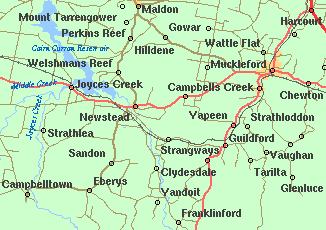
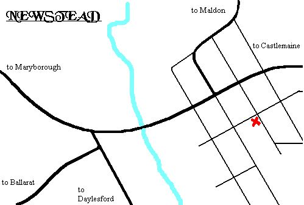
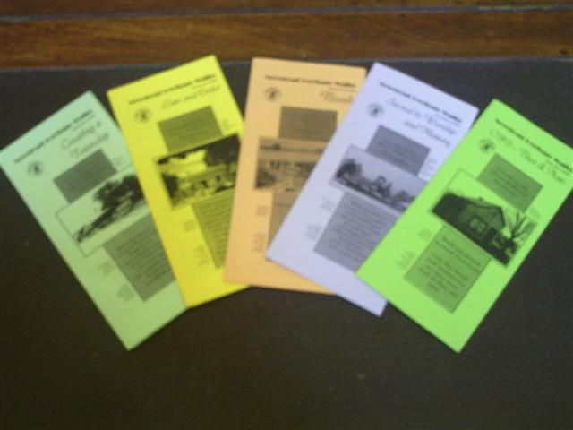

|
|
DISTRICT Our society covers the area of the former Newstead Shire which included such places as; Campbells Creek, Clydesdale, Fryers, Fryerstown, Green Gully, Guildford, Joyces Creek, Newstead, Sandon, South Muckleford, Strangways, Strathlea, Tarilta, Vaughan, Welshmans Reef, Yandoit, Yapeen * * * * * *
 
Newstead Heritage Walks

|
|
©2004-2025 Newstead & District Historical Society Web Design: Brian Dieckmann Page last updated: 13 Mar 2026 |